made for you, pichulina
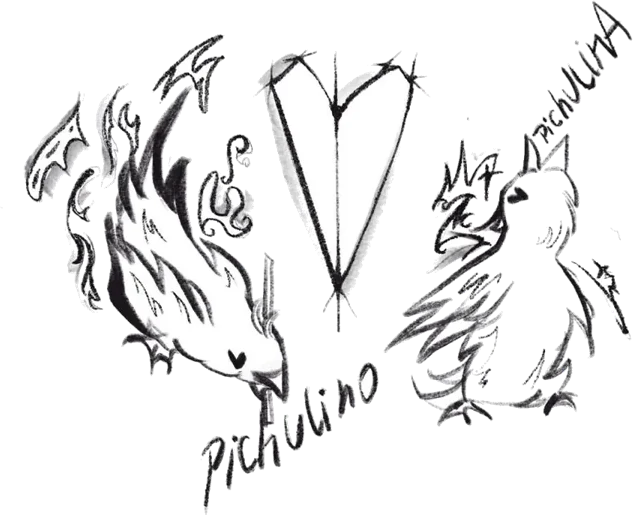

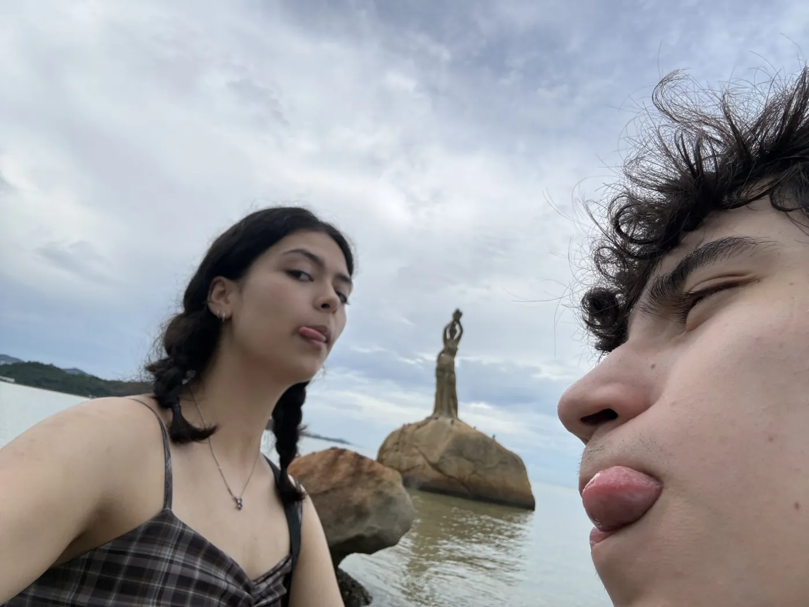
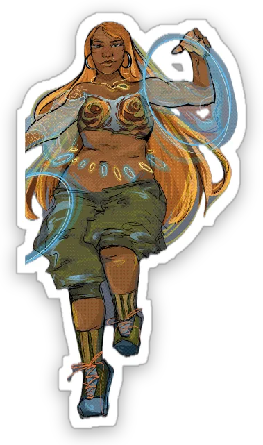
Discover what makes our story one of a kind.
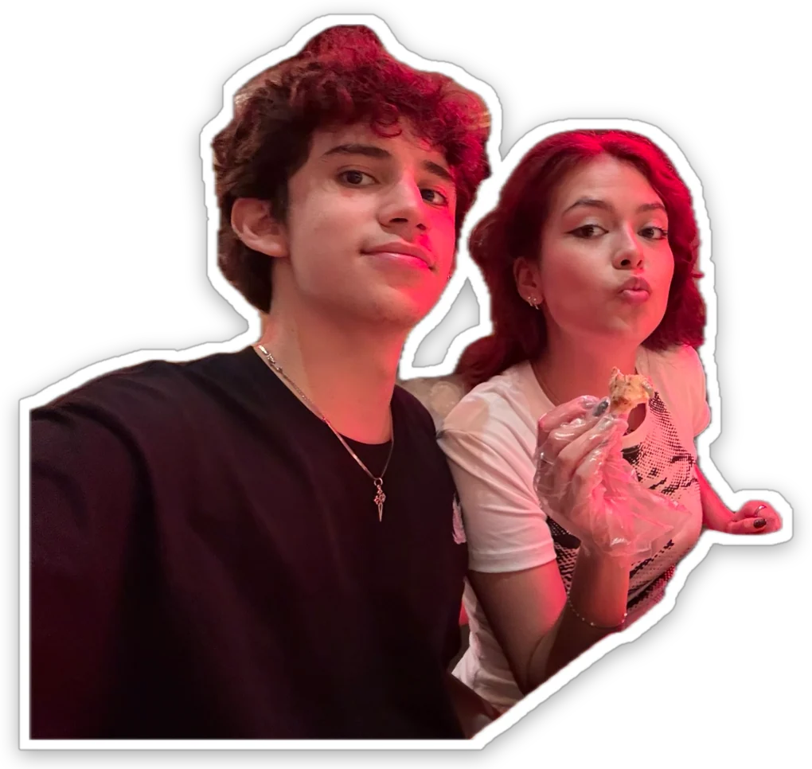
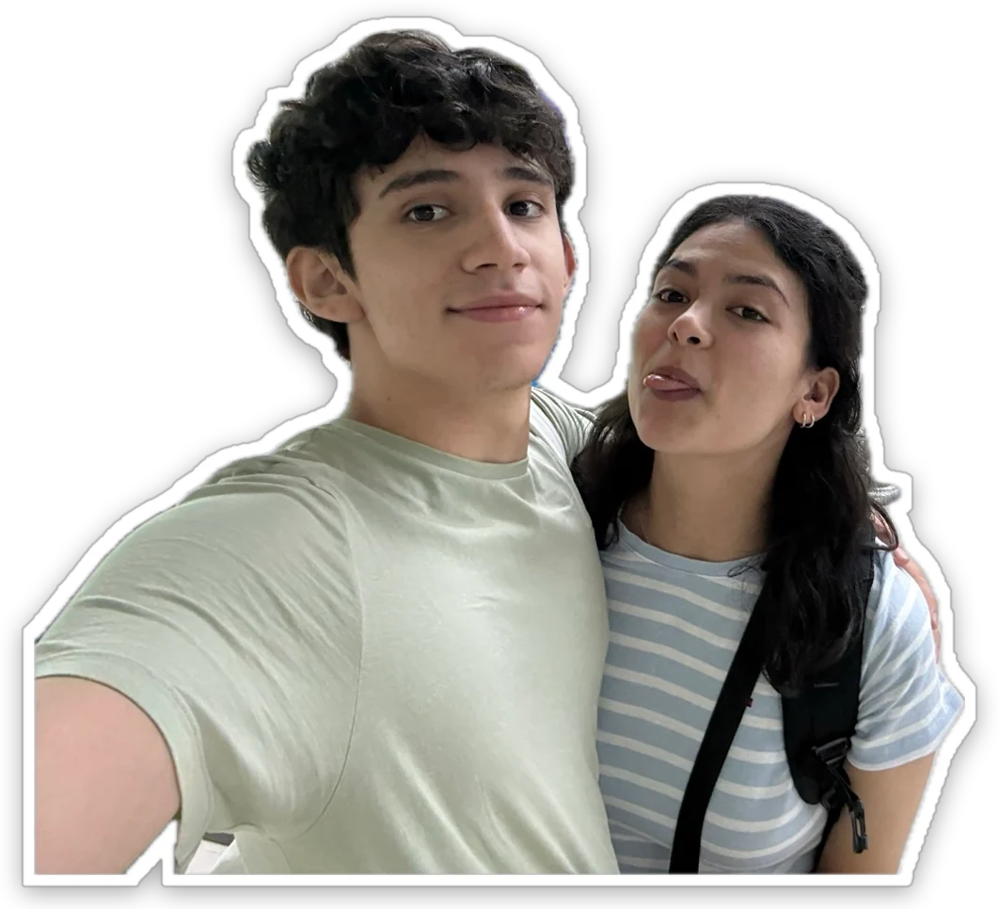
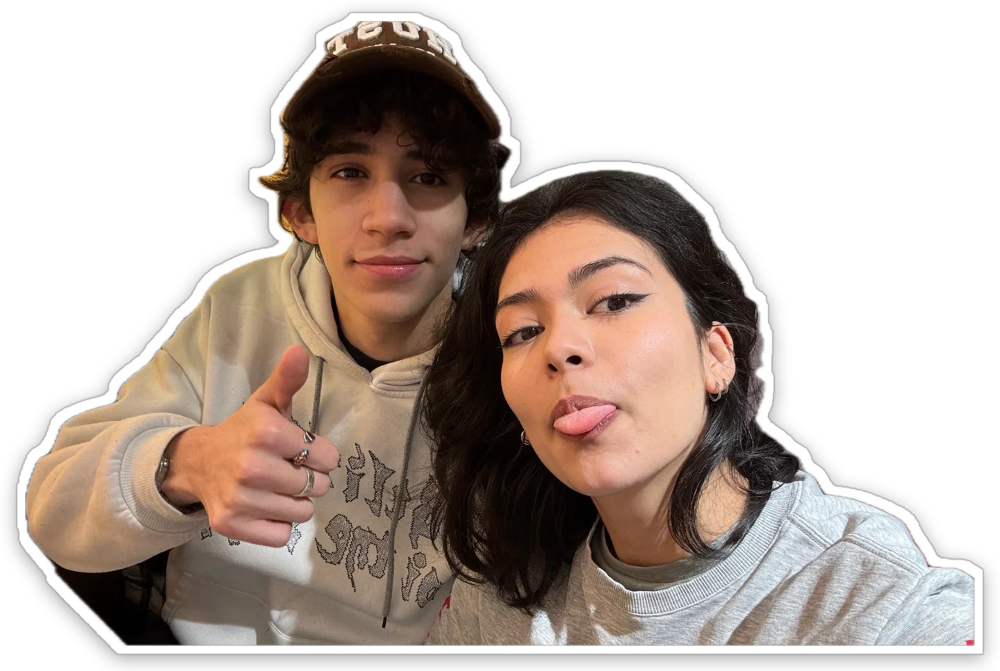
Results pending… finish the 3 experiments first. 0 / 3
| Compatibility | 100% |
| Shared memories | countless |
| Favorite person | pichulino |
| Future adventures | pending |
| Probability of choosing you again | 100% |
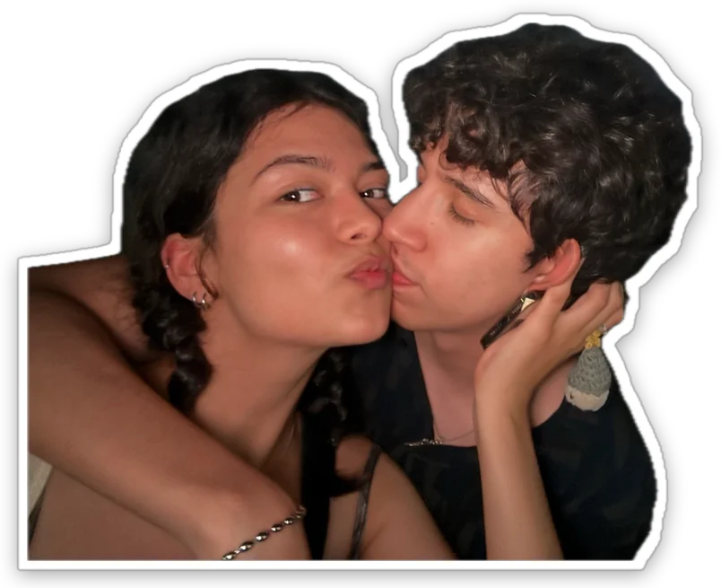
After extensive research, I've concluded that loving you is my favorite discovery.
— pichulino
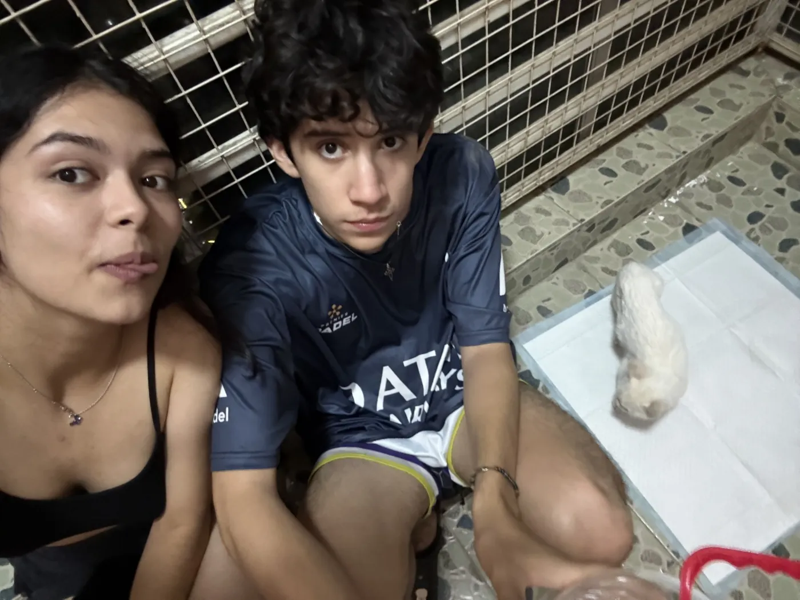
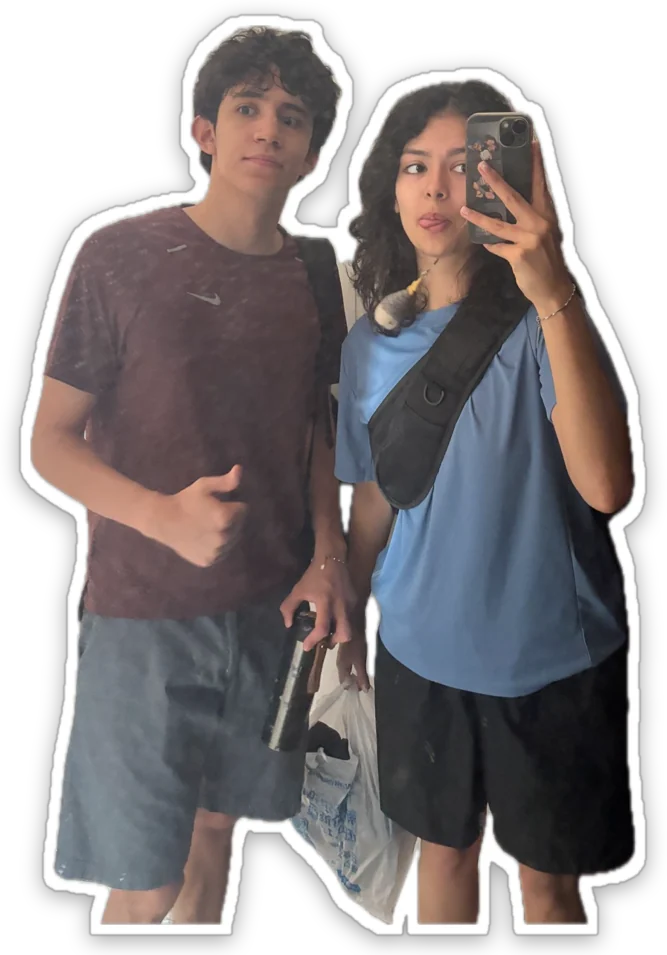
Because some things are worth counting. And others are simply immeasurable.
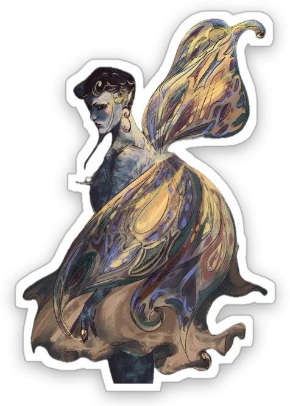
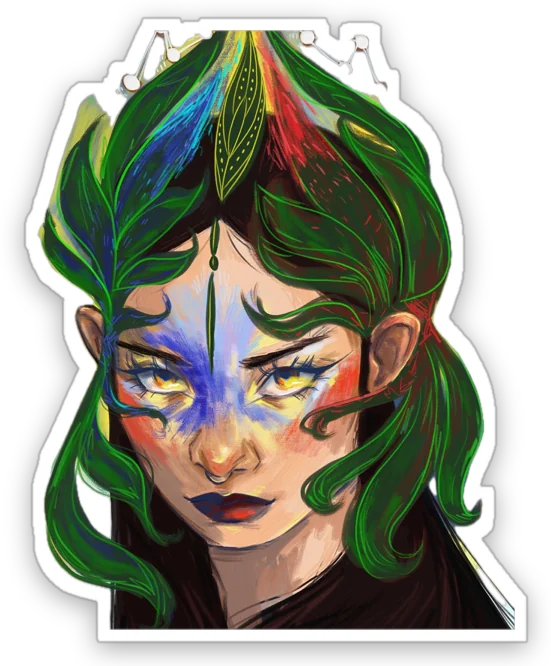
And somehow, I still wish every day had a few more hours with you.
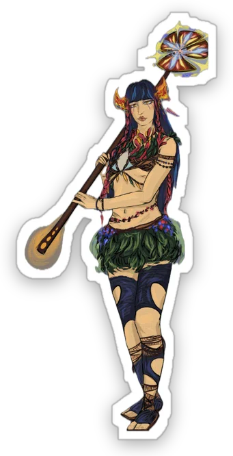
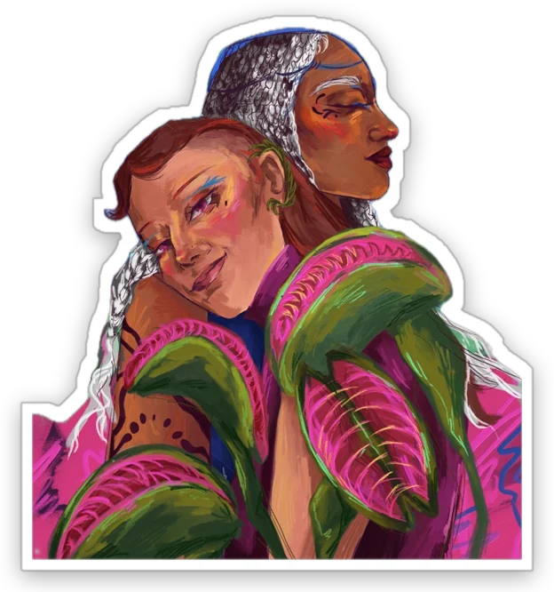
The best part? We haven't collected all our data yet.
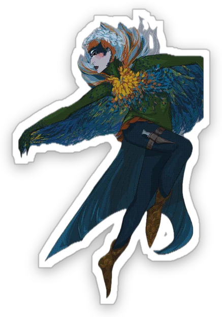
Can love really be measured?
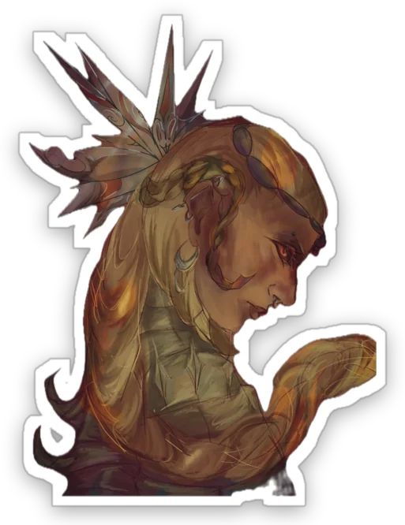
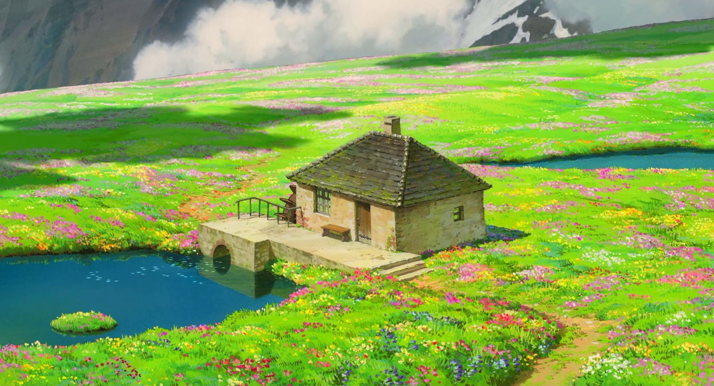
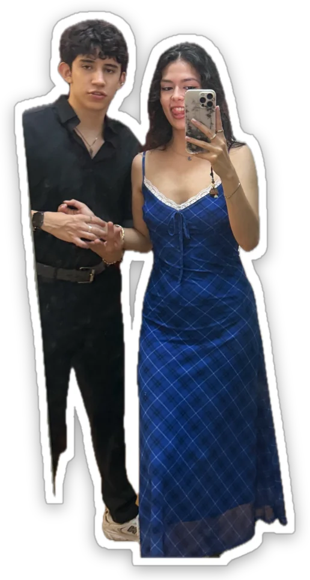
For every version of you, on every kind of day.
No sé cómo serán todos los días que vienen, pero sí sé que quiero acompañarte en cada uno de ellos. Así que hice este pequeño espacio para ti.
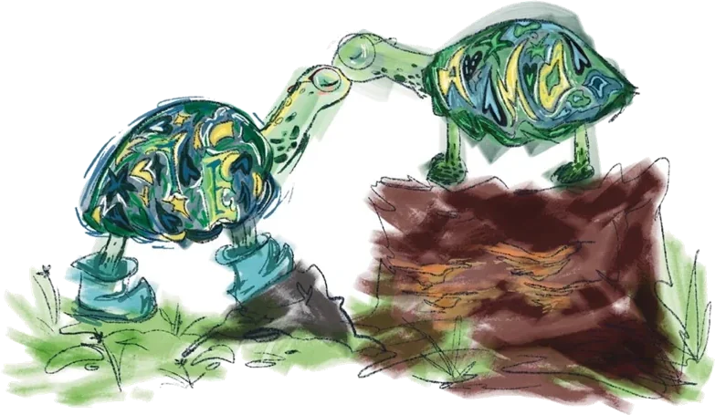